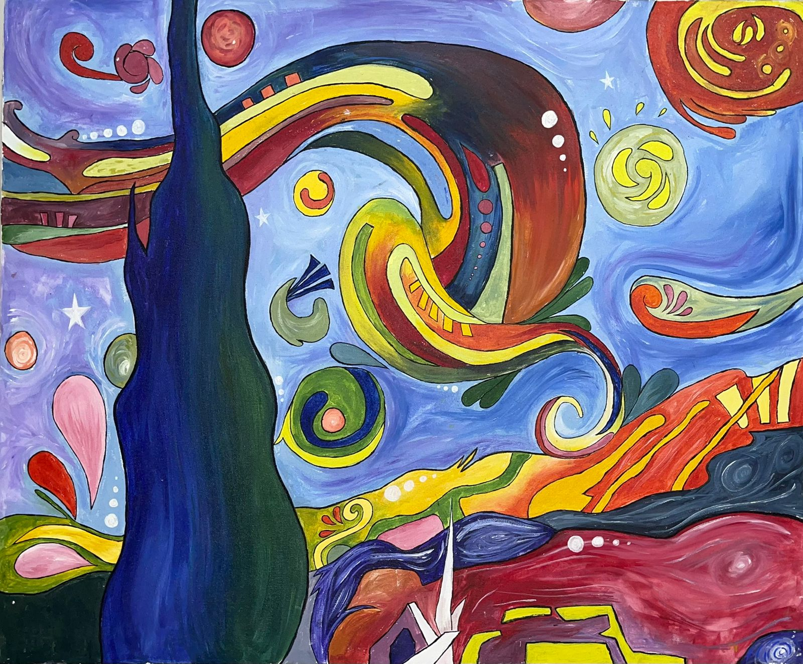

Creative Corner

The Crimson Return
Medium: Acrylic on CanvasAn abstract meditation on the 'hour of return,' using saturated crimson skies and a still shoreline to capture the communal peace of fishermen finishing their day's labor.

Vibrant Nights
Medium: Acrylic on CanvasA vibrant subversion of 'Starry Night' that reimagines the night as a cheerful, lawless space, swapping the moon for a sun to reflect the electric energy of abstract freedom.

The Golden Vessel
Medium: Acrylic on CanvasA visual meditation on Tagore’s 'Shonar Tori,' using moody teals and indigo waters to capture the moment creation is carried away while the maker is left behind.